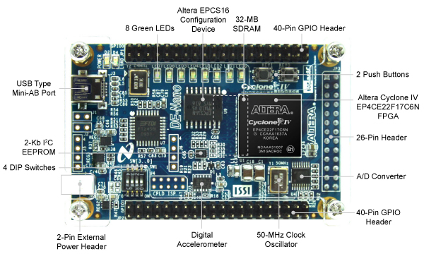

Introduction

Abstract
Industry 4.0 has arrived and some of its key points are IoT, real time data processing, cloud computing, etc. Manual ways of maintaining and checking ambiguity in an industrial environment is very hard and time consuming and contacting the expert for fixing the problem at the same time is quite complex. Instead of manual checking, autonomous surveillance robots will save time and by checking the environment near the machine, it can generate a report and upload it to the cloud. One can easily analyze the working of a plant/machine by checking the data. If the robot finds any emergency condition, then it can turn on the alarm and urgently call for help. By implementing this system, we can reduce the industrial accidents which are very common and most dangerous nowadays. We can save time and labor for other important work and at the same time we can increase the frequency of checking the possible threats like gas leakage, fire, temperature overload.
Motivation
Industry 4.0 is an ongoing phenomena and it’s stated as “An Automation Revolution”. Applying automation in the field of maintenance and surveillance will save time as well as the labor work. Which we can utilize for other important applications. Nowadays everything is decentralizing and possible virtually so one can take the survey by checking the data generated through the robot and utilize a large amount of time and resources. There are on average 3000 occupational accidents happening in industries which are very dangerous. By implementing the necessary automation we can reduce these cases of dangerous accidents.
Description
something else
Hardware Specifications
| Component | Description | Datasheet |
|---|---|---|
| De0-Nano | def | De0-Nano |
| N20 Motors | def | - |
| L9110s Motor Driver | def | L9110s |
| 2S li-ion battery | def | - |
| Line Follower Sensor | def | - |
| Xbee s2c Module | def | xbee s2c |
| TCS3200(Color Sensor) | def | TCS3200 |
DE0-Nano Development Board

Specification
Cyclone® IV EP4CE22F17C6N FPGA
- 22,320 Logic elements (LEs)
- 594 Embedded memory (Kbits)
- 66 Embedded 18 x 18 multipliers
- 4 General-purpose PLLs
- 153 Maximum FPGA I/O pins
Configuration Status and Set-Up Elements
- On-board USB-Blaster circuit for programming
- FPGA Serial Configuration Device (EPCS)
Clock System
- On-board 50MHz clock oscillator
Expansion Header
- Two 40-pin Headers (GPIOs) provides 72 3.3V I/O pins
- Two 5V power pins, two 3.3V power pins and four ground pins
- One 26-pin header provides 16 3.3V digital I/O pins and 8 analog input pins to connect to analog sensors, etc
Memory Devices
- 32MB SDRAM
- 2Kb I2C EEPROM
General User Input/Output
- 8 green LEDs
- 2 debounced push-buttons
- 4 dip switches
G-Sensor
- ADI ADXL345, 3-axis accelerometer with high resolution (13-bit)
A/D Converter
- NS ADC128S022, 8-Channel, 12-bit A/D Converter
- 50 ksps to 200 ksps
Power Supply
- USB Type mini-AB port (5V)
- Two DC 5V pins of the GPIO headers (5V)
- 2-pin external power header (3.6-5.7V)
Software Specifications
- Quartus Prime Lite 19.1 for programming the FPGA board (Verilog HDL).
- Modelsim
- Github for maintenance of code and project repo online.
- Firebase for hosting resources online (Cloud communication on a server)
- Sqlite for database management.
ModelSim

We are using EDA(Electronic Design Automation) tools like ModelSim for the simulation of our logic. There are lots of other simulatiors are avalable in internet for velidating and checking the HDL descriptions.
Verilog is independent of this tools so there will be same output in all the simulatators but at the time of implimentation there will be different RTL design based on the compney whose implimentation tool we are using.
ModelSim comes with different edition like Intel, Xilinxs and Professional edition which is independent edition so there willl not be any inbuilt support for FPGA libraries for different kind of boards.
In HDL, Verilog will not need any library but VHDL will require atleast one library called IEEE library.
- In ModelSim there is 2 type of system we can use.
- GUI
- Command Based(Through
transcriptwindow)
ModelSim is having proprietary representation of HDL which is being written by programmer. It will try to replicate how things will actually work while working with the simulation.
- Simulation Guide: